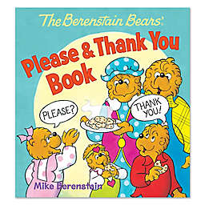
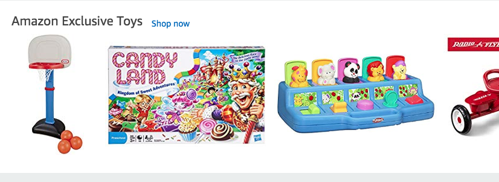
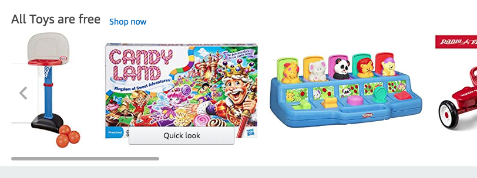
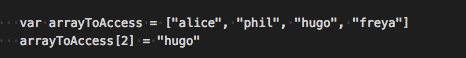
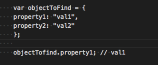
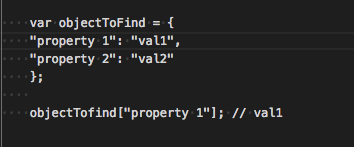
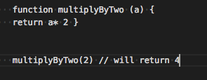

An analogy to describe the differences between HTML and CSS
HTML and CSS are like the elements in a kids picture book. The HTML is the words on the page, the written text that the reader will read aloud. While the CSS is the elements on the page that make the picture book look pretty. It is the headings on the pages, the styling of the pictures and the colouring of the book.

Explain control flow and loops using an example process from everyday life, for example 'waking up' or 'brushing your teeth'. (But not those ones).
The control flow is the order in which the computer executes
the
code. Code is run from the first line to the last line,
unless
the computer runs across the structures like loops and
conditionals that change the control flow
An everyday example of this is a person will read a book
from
the beginning to end unless something in the book tells the
person that they should check out different parts of the
book
first.
Loops are a way to complete a process over and over again
until
a desired end point. An example of a loop in everyday life
is
walking. You move your left leg, then your right leg and
repeat
this over and over again until you reach your specified
destination.
Describe what the DOM is and an example of how you might interact with it.
DOM stands for Document Object Model. It is a programming interface for HTML that represents an HTML page in a logical tree structure like this.

It includes all the headers, nodes
and
objects on the page:
You can interact with the DOM in the DevTools. You can
select
the nodes and change the appearance of them as such:
Before:

After:

You can page around with the elements on the DOM to make
your friends think that a webpage is giving away free stuff
Explain the difference between accessing data from arrays and objects.
With arrays you use the indexes. You do this by using bracket notation []. As with strings and other Javascript elements you begin the count with 0. Therefore the first element in the element is access with [0] and the second is accessed with [1] etc.

With objects you use bracket and dot notation to access the
data. Dot notation is what you use when you know the name of
the
property you want to access.

You mainly use bracket notation [] when the property you
are
trying to access has a space in its name

Explain what functions are and why they are useful.
A function is a set of code designed to perform a particular task. A function lets you define a block of code, give it a name and then execute it as many times as you want. A function can look like this:

to call the function you put the value you want
to
run
in the function inside the brackets after the function
name.
They are useful as they make a set of code reusable. You
can
define the function and use it multiple times to produce
different results. This helps code to be DRY (do not
repeat
yourself) and therefore easier to read.